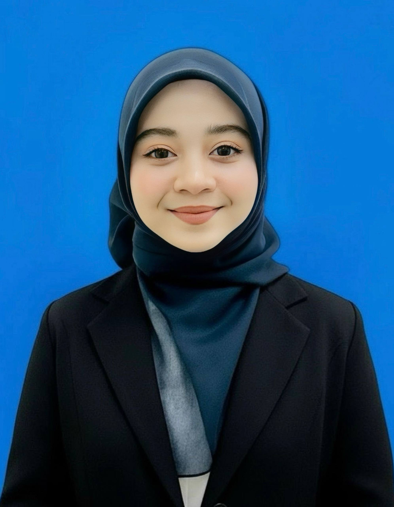

I am Nurul Syahieda, a Computer Science student with strong interest in cybersecurity, networking, IoT technologies, and system protection. This e-portfolio presents my career goals, technical skills, learning progress, and future development plan in network security and related IT fields.

Computer Science Student
Future SOC Analyst
Cybersecurity & IoT Enthusiast
I am interested in becoming a Security Operations Center (SOC) Analyst. A SOC Analyst is responsible for monitoring network activities, detecting cyber threats, investigating suspicious behavior, and responding to cybersecurity incidents.
This role is highly relevant in modern cybersecurity because organizations today face increasing cyber threats such as ransomware, phishing attacks, malware, and data breaches. SOC Analysts help organizations maintain system security, protect sensitive information, and minimize cybersecurity risks.
Monitor security alerts, investigate suspicious network activities, and respond to incidents.
Networking, Linux administration, cybersecurity awareness, analytical thinking, and security monitoring.
Wireshark, SIEM platforms, Kali Linux, Python scripting, and monitoring tools.
HTML & CSS
Python Programming
Networking
Linux
| Industry Requirement | Current Level | Improvement Needed |
|---|---|---|
| Linux Administration | Beginner | Need more hands-on experience |
| Cybersecurity Tools | Basic | Learn Wireshark & Kali Linux |
| Programming Skills | Intermediate | Improve automation scripting |
Improve networking knowledge and Linux administration skills.
Learn cybersecurity tools such as Wireshark and Kali Linux.
Complete CCNA certification and improve Python scripting.
Become a professional SOC Analyst in the cybersecurity industry.
Smart Temperature Monitor using ESP32 and Blynk platform.
Hands-on experience in HTML, CSS, Python, and web development.
Exposure to networking, Linux environments, and cybersecurity concepts.
My dream company is Cisco because it is one of the leading companies in networking and cybersecurity technologies. I want to work in an environment that encourages innovation, continuous learning, and professional growth.
I believe I can contribute through my willingness to learn, adaptability, teamwork abilities, and technical background in networking and IoT projects.
My strengths include responsibility, commitment, and eagerness to improve my skills continuously. One of my weaknesses is that I sometimes feel nervous during presentations, but I continuously work on improving my communication and confidence through academic activities.